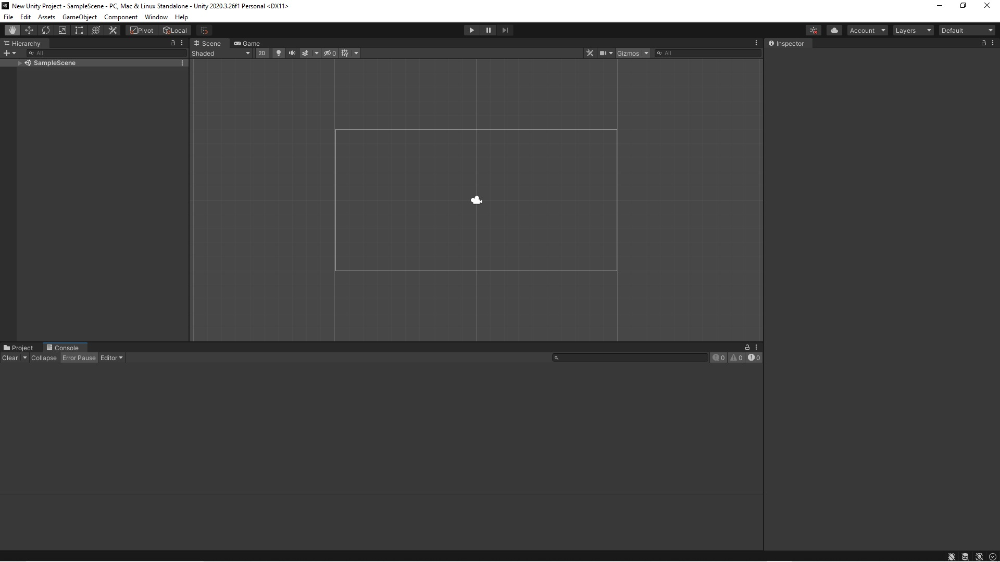

Getting Started With Unity / Tutorial 02 - The Unity Editor
The default layout of Unity starts with 5 windows:
- Scene View - allows you to look at and directly interact with GameObjects in your Scene.
- Project Window - shows all of the assets we have available to build your project. Assets are files saved on your hard-drive. Project window makes it easier to get quick access to these files so you don't have to switch between your OS file manager and Unity game engine editor. You'll also quickly find your scripts, textures, 3D models, audio files and more. You'll also have access to previously saved Unity scenes.
- Hierarchy window - displays all of the GameObjects you are currently using in your scene. GameObjects can be moved and rearranged as you please.
- Inspector Window - Inspector shows you the details of the selected asset from a Project Window or a GameObject from either Scene or Hierarchy window. You’ll see all the parameters of an item on the right side.
- Game View - serves as a preview of your application in the editor. By using the controls in the toolbar you’ll have the ability to play test your application at any time.
On top of your editor you’ll find the toolbar with play controls (play, pause, and play frame-by-frame).
The toolbar also contains:
- Transform tools - allows you to manipulate and navigate gameobject in the scene (moving, scaling, rotating etc.)
- Gizmo toggles - allows you to switch the center or pivot position of your game objects and choose between local or global world space navigation
- Play Controls lets you play test the game
- Unity Services and account - you will be able to upload and download your projects from the Cloud. The account drop down allows you to sign in and out of your account from Unity Editor.
- Layers and Layout menu - quickly shows you the layers of your game. The drop down allows you to switch between saved layouts in your unity Interface.
The windows layouts can be customized but the default settings are recommended for the beginners.
Once you develop your own building habits you can switch to another layout view.
A 2D platform game layout may look different than a first person shooter 3D game.
The default layout on a Windows PC:
